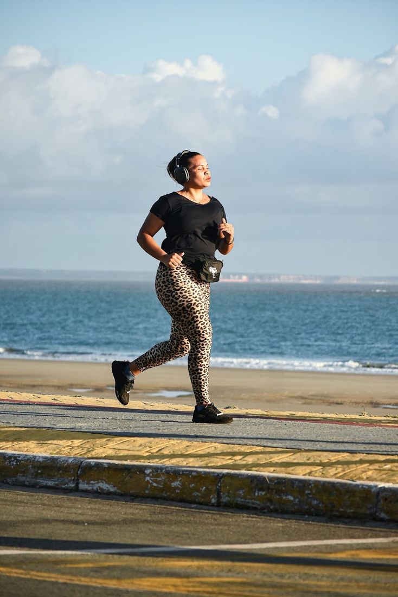

Perda de peso e ganho de massa
Treino planejado para o seu processo.
Personal trainer em São Luís para perda de peso, ganho de massa, volta aos treinos após cirurgia e saúde na terceira idade.
★ 5,028 avaliações no Google
Treino planejado para o seu processo.
Volta segura aos treinos, no seu ritmo.
Desempenho funcional e saúde com segurança.
Acompanhamento que vai além da academia.
Lista de exemplo: na versão final entram exatamente os serviços da Daiana.
O que a Organização Mundial da Saúde recomenda e onde o Brasil está.
dos brasileiros não fazem a atividade física mínima recomendada.
Fonte: OMS / The Lancet Global Health, 2018por semana de atividade moderada é o mínimo recomendado para adultos.
Fonte: OMS, Diretrizes 2020por semana de fortalecimento muscular também fazem parte da recomendação.
Fonte: OMS, Diretrizes 2020Começar com acompanhamento reduz o risco de lesão e ajuda a manter a constância.
Um minuto para entender por onde começar, com uma checagem rápida de segurança.
Sugestão geral de ponto de partida. O plano de treino é definido após a avaliação.
Quero começarNota 5,0 em 28 avaliações. Ver no Google →
Medidas, histórico e objetivo.
Planejado para você e para a sua rotina.
Ajustes constantes para continuar evoluindo.
“Seu acompanhamento está sendo essencial no meu pós-cirúrgico; consegui voltar aos treinos bem melhor do que antes.”
“Sempre propõe treinos que me tiram da zona de conforto de maneira segura e eficaz.”
“Tem muita experiência, técnica e habilidade, respeitando os meus limites.”
Próximo ao Tropical Shopping, Av. Coronel Colares Moreira · Jardim Renascença, São Luís (MA)
(98) 99970-2812